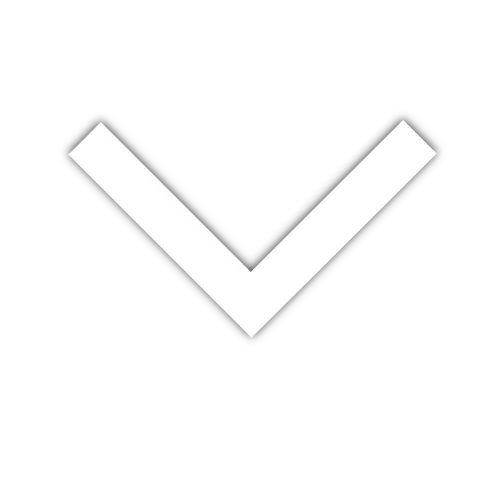

A young aspiring scientist and programmer. I have varied experience with front-end development with languages including HTML, CSS, Javascript. I also have experience using extensions such as React, Bootstrap, SCSS, and a few more minor frameworks. I have developed basic skills in Adobe Illustrate and Adobe Photoshop, which occasionaly comes in handy within Web Development. More recently, I have developed a fondness for Python and Artificial Intelligence and have experimented with applications of stable-diffusion models. I am currently finishing up my Cegep degree at Cegep Heritage College and have been accepted at Mcgill in physics. I am planning on taking an honours physics and computer science joint major. On my free time, I do karate, I play violin and I code.
This is a wider card with supporting text below as a natural lead-in to additional content. This content is a little bit longer.
This card has supporting text below as a natural lead-in to additional content.
Last updated 3 mins ago
This is a wider card with supporting text below as a natural lead-in to additional content. This card has even longer content than the first to show that equal height action.
Last updated 3 mins ago